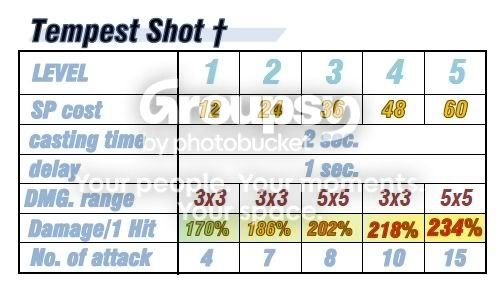

เป้าหมายเดี่ยว?

 โดย ECO » จันทร์ 27 มิ.ย. 2011 12:00 pm
โดย ECO » จันทร์ 27 มิ.ย. 2011 12:00 pm

 โดย ECO » จันทร์ 27 มิ.ย. 2011 1:38 pm
โดย ECO » จันทร์ 27 มิ.ย. 2011 1:38 pm


 โดย ECO » จันทร์ 27 มิ.ย. 2011 4:57 pm
โดย ECO » จันทร์ 27 มิ.ย. 2011 4:57 pm
 โดย ECO » จันทร์ 27 มิ.ย. 2011 4:57 pm
โดย ECO » จันทร์ 27 มิ.ย. 2011 4:57 pm

 โดย ECO » จันทร์ 27 มิ.ย. 2011 6:05 pm
โดย ECO » จันทร์ 27 มิ.ย. 2011 6:05 pm

 โดย ECO » จันทร์ 27 มิ.ย. 2011 6:32 pm
โดย ECO » จันทร์ 27 มิ.ย. 2011 6:32 pm

 โดย ECO » จันทร์ 27 มิ.ย. 2011 9:15 pm
โดย ECO » จันทร์ 27 มิ.ย. 2011 9:15 pm

 โดย ECO » จันทร์ 27 มิ.ย. 2011 10:09 pm
โดย ECO » จันทร์ 27 มิ.ย. 2011 10:09 pm

 โดย ECO » จันทร์ 27 มิ.ย. 2011 10:21 pm
โดย ECO » จันทร์ 27 มิ.ย. 2011 10:21 pm
 โดย ECO » อังคาร 28 มิ.ย. 2011 1:57 am
โดย ECO » อังคาร 28 มิ.ย. 2011 1:57 am

 โดย ECO » อังคาร 28 มิ.ย. 2011 3:37 am
โดย ECO » อังคาร 28 มิ.ย. 2011 3:37 am
 โดย ECO » อังคาร 28 มิ.ย. 2011 8:31 am
โดย ECO » อังคาร 28 มิ.ย. 2011 8:31 am
Aussibum เขียน:HawkeyeShooting Mastery JobLv.3
- Passive
- เพิ่ม ATK Hit และโอกาส Critical (อาวุธทุกชนิดที่ใช้ได้) มีผลซ้อนทับกับ Mastery ในคลาสแรกๆHIT Communion JobLv.6
- เพิ่ม Hit ของผู้เล่นในปาร์ตี้รวมถึงตัวเอง ในช่วงเวลาที่กำหนดHawkeye JobLv.10
- ในระหว่างผลของสกิล จะเพิ่ม Bonus Damage แต่เมื่อขยับ จะเป็นการยกเลิกผล
- Passive
- ลด Hete ของเราที่มีต่อมอนเตอร์Quick Shoot JobLv.20
- มีโอกาสที่จะโจมตี 2 ครั้งซ้อน ใช้ได้กับธนูและปืนทุกชนิด อีกทั้งยังสามารถเปิด-ปิด สกิลนี้ได้ทุกเวลาตามต้องการ
- Passive
- หากเราโจมตี miss จะมีโอกาสเล็กน้อยที่เราจะโจมตีซ้ำอีกครั้ง โดยจะโจมตีเป็น CriticalWeakness Shot JobLv.25
- เมื่อโจมตีศัตรูตามปกติ จะมีโอกาสทำให้เป้าหมายติดสถานะผิดปกติด้วย สถานะผิดปกติ ขึ้นกับเลเวลสกิลFlare Shot JobLv.30
Tempest Shot JobLv.35
- ยิงลูกกระสุน หรือลูกธนูออกเป็นพายุ โดยรอบเป้าหมายChange Target JobLv.40
Search Weakpoint JobLv.45
 สรุปคือ สายนี้เค้าอยากให้เรายิงสดสินะ สินะ สินะ สินะ สินะ
สรุปคือ สายนี้เค้าอยากให้เรายิงสดสินะ สินะ สินะ สินะ สินะ โดย ECO » อังคาร 28 มิ.ย. 2011 10:39 am
โดย ECO » อังคาร 28 มิ.ย. 2011 10:39 am
 โดย ECO » อังคาร 28 มิ.ย. 2011 11:16 am
โดย ECO » อังคาร 28 มิ.ย. 2011 11:16 am
 โดย ECO » อังคาร 28 มิ.ย. 2011 11:42 am
โดย ECO » อังคาร 28 มิ.ย. 2011 11:42 am
กำลังดูบอร์ดนี้: ไม่มีสมาชิก และ บุคคลทั่วไป 2 ท่าน